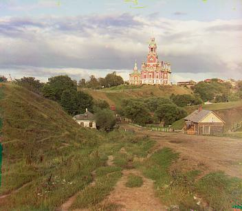
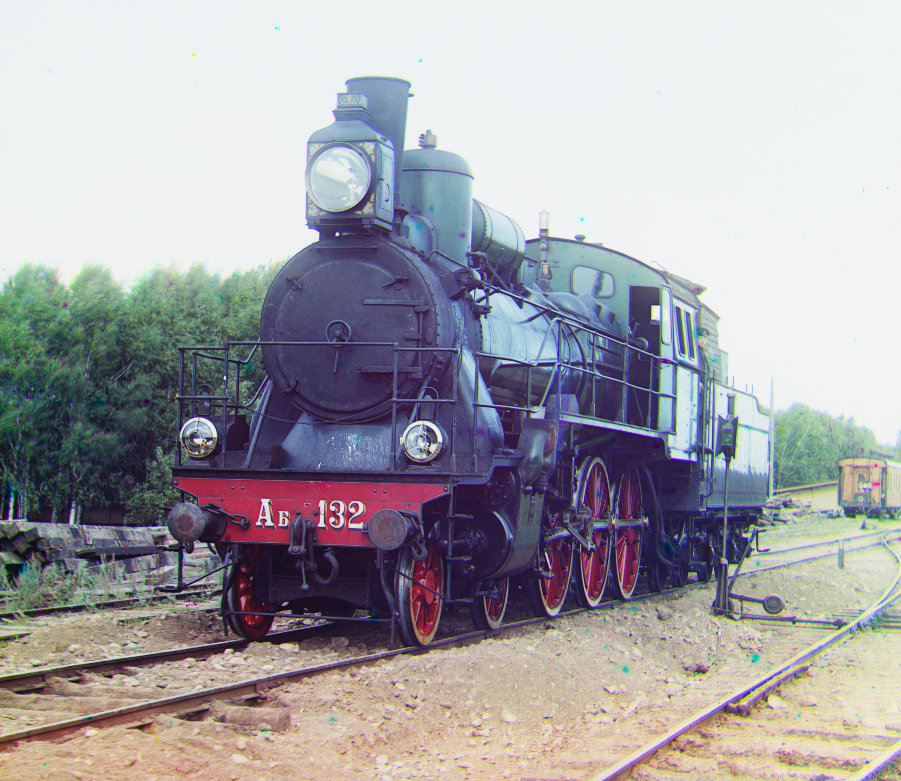
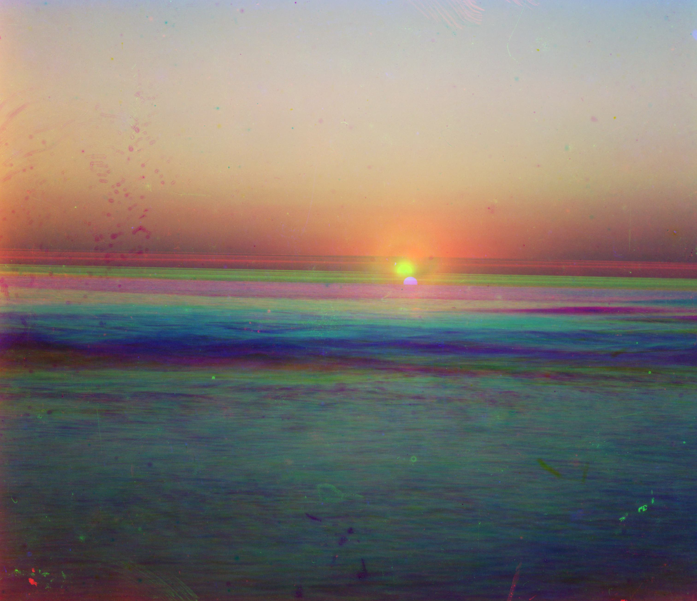

Introduction
Before the Russian Revolution in 1918, Sergei Mikhailovich was commisioned by the Tzar to travel across the empire and take color photographs. While the technology for color photography didn't exist, he recorded three exposures onto a glass plate using a red, green, and blue filter. He hoped in the future he would be able to render them into color images. Unforunately, he did not get to see this plan into fruition. His RGB glass plate negatives of the Russian Empire were purchased by Library of Congress in 1948 and later digitized. These digitized glass plates are shown below for reference. The goal of this project is to process these digital copies and colorize them.


Approach
In my approach, I started by taking separating the images into the blue, green, and red channels.
This was done by dividing the image into thirds.
After separating these channels, I fixed the blue channel
and then aligned the red channel and green channel to it. The easiest way to align these channels
is to exhaustively search the images over a window of displacements. We then score the images using an image
matching metric and then pick the displacement with the best score. I opted to used the Euclidean distance of each
image as my image matching metric and chose a default window of [-20, 19]. By using the Euclidean distance I just take the difference between each image, square it, sum it,
and finally take the square root. Since there is artifacting on the edges, I also crop the edges by either 10% for the smaller images and 20% for the larger images before aligning.
This worked well for the smaller JPG images, but for the TIFs we need a larger range of displacements. However, this drastically increases the computation time. To counteract this increase in
computation time, we can search using image pyramids. Within an image pyramid, we have the image represented at multiple scales. In my implementation, I used a scaling factor of 2. In my implementation,
I determine the scaling factor to get the image small enough to run the single-scale implementation earlier. This is run over a window of [-50, 49]. Then we go up the pyramid scaling up until we reach the original
image size, but looking with a window of [-2, 1] and adjusting our displacement vector accordingly.
Finally, using the displacement vectors I shift the green and red channel images. I crop 5% off the edges from the smaller images and 10% off the edges of the larger images to remove artifacting. Finally, I stack the channels to produce
an RGB color image.
This ultimately worked for almost all the images except for the image of the emir (shown below). The red channel is not properly aligned because we used the blue channel to align the red channel. In the center of the image the intensity of
blue pixels is significantly higher
compared to red. Therefore, using Euclidean distance as an image matching metric would be less effective since the pixel values would be drastically different. In order to properly align it, I had to use feature based alignment using edges.
I elaborate on this procedure in my bells & whistles section.
Results
Below are the results for my initial colorization implementation. Below each image the displacement vectors used to align the red and green channels are listed.
Church
Green: (1, 21) Red: (-4, 57)
Cathedral
Green: (2, 5) Red: (3, 12)
Onion Church
Green: (25, 49) Red: (33, 105)
Monastery

Green: (2, -3) Red: (2, 3)
Tobalsk

Green: (3, 3) Red: (3, 6)
Sculpture
Green: (-11, 29) Red: (-26, 137)
Self Portrait
Green: (25, 77) Red: (33, 173)
Lady
Green: (5, 45) Red: (9, 105)
Melons
Green: (5, 77) Red: (9, 173)
Harvesters
Green: (13, 57) Red: (9, 121)
Icon
Green: (13, 37) Red: (21, 85)
Three Generations

Green: (13, 45) Red: (9, 105)
Emir
Green: (21, 45) Red: (-199, 0)
Train
Green: (3, 41) Red: (29, 85)
Additional Images
Below are some other interesting colorized images from the Prokudin-Gorskii collection.
Forest Road
Green: (-30, 33) Red: (5, 93)
Lugano
Green: (-16, 37) Red: (-28, 89)
Sunset at the Sea
Green: (0, 0) Red: (73, 0)
Little Russia
Green: (5, -20) Red: (9, -32)
Brick Building
Green: (-12, 41) Red: (-27, 97)
Bell Tower
Green: (13, 45) Red: (9, 89)
Bells & Whistles
Below are additional improvements made to my base implementation.
Feature Based Alignment - Sobel Edge Detection
In my base implementation, my emir image did not align properly due to the high blue intensity compared to the red intensity. As a result, I used edge detection using the Sobel operator. I initially applied a Gaussian blur. Afterwards, I convolve the image using the Sobel kernels in the vertical and horizontal directions to estimate the image intensity gradient. Finally, I return a black and white image after applying a threshold to filter out the edges. Using this feature based alignment was effective in aligning the emir as shown below.
Green: (21, 45) Red: (-199, 0)
Green: (21, 45) Red: (37, 105)
White Balancing - Gray World Algorithm
I also incorporated automatic white balancing. In order to do this, I needed to estimate the illuminant. Afterwards I need to manipulate the colors to counteract the illuminant and simulate a neutral illumninant. I use the gray world algorithm and assume the average color is the illuminant and shift it to gray. The gray world algorithm assumes the average color in every scene is gray and is equal in magnitude. To adjust the color of the image I compute the average pixel intensity of all the pixels and the average pixel intensity of each channel. This gives me a scalar and a tuple of length 3. I divide average pixel intensity by the average pixel intensity of each channel and then multiply the pixel in each channel by the responding scalar multiplier for each channel. This finally gives us our white balanced image.